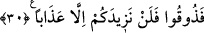
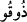

yalanlamalarını, “sizin inkârınız ve yalanlamanız, karşılığını almak üzere bir kitapta
yazılmış ve korunmuştur” denilerek pekiştirmek için getirilmiştir.
Kâşânî bu âyeti şöyle anlamaktadır: Biz onların amel ve inançlarının sûret ve
biçimlerinden olmak üzere her şeyi nefislerinin aleyhine semâvi sahifelerinde yazıp
kaydettik.
30. Tadın! Bundan sonra yalnızca azâbınızı arttıracağız.
“Tadın, bundan sonra” azâbınızın üzerine “yalnızca azâbınızı arttıracağız.”
“Tadın” anlamına gelen “/zûku” fiilinin başındaki “fa” harfi, fâ-i cezâiye’dir. Bu
harf, tatma emrinin onların hesaba çekilmeyi inkârlarının ve âyetleri yalanlamalarının
bir sonucu olduğunu göstermekte ve azâbı tatma sebebinin bu amelleri olduğunu ifâde
etmektedir. Bu durumda az önce ifâde ettiğimiz gibi “biz her şeyi bir kitapta sayıp
yazdık” âyeti, sebep ile sonuç arasına girmiş bir mu’teriza cümlesidir. Bu cümle, sebep
ile sonucun her ikisini de pekiştirmektedir. Dolayısıyla bu cümle, bir yandan onların
masiyetlerinin sayılıp kayda geçirildiğini ifâde ederken, diğer yandan bu amelden
kaynaklanan azâbın mutlaka başa geleceğini, lâyık oldukları kadarıyla takdir edilmiş
olduğunu ifâde etmektedir.
Âyetin akışına bakacak olursak yukardan beri hep üçüncü şahıslar kullanılırken birden
birinci çoğul şahsa geçilerek, kâfirlerin bizzat kendilerine hitap edilmeye
başlanmaktadır. Bu hitap, tehdidde şiddeti arttırmak içindir.
“Nezîde” fiilinin başındaki “len” harfi, “arttırmayı terk” fiilinin Allah Teâlâ’nın
gazâbının gizlenmeyecek ölçüde çok ve ifâde edilemeyecek derecede büyük olduğunu
belirtmek için getirilmiştir. Peygamber Efendimiz’den rivâyet olunduğuna göre bu âyet-i
kerîme Kur’an’da cehennemliklere karşı ifâde edilen en şiddetli âyettir. Çünkü burada
onların cehennemden bir gün gelip çıkma ümidleri suya düşürülmektedir. Onlar
cehennemde bir çeşit azaptan kurtulduklarında ondan daha beterine saplanacaklardır. Şu
halde oradaki azâbın mertebeleri sayı ve süre açısından her ne kadar sonsuz ise de her
bir mertebe şiddet ve çetinlik açısından sonlu olacaktır. Yâni bir şiddetli azâbı ondan
daha şiddetlisi izleyecektir.
Dikkat edileceği üzere burada Allah onlara “yalnızca azâbınızı arttıracağız”
buyuruyor. Oysa bir başka âyette “Kıyâmet günü Allah onlarla konuşmayacak,
onlara bakmayacak ve onları temize çıkarmayacaktır” (Âl-i İmrân, 3/77)
buyurulmaktadır. Bu iki âyet ilk bakışta birbiriyle çelişir gibi gözüküyor. Çünkü Âl-i
İmran’da Allah Teâlâ’nın konuşmayacağı ifâde edilirken burada onlara konuştuğunu ve
“yalnızca azâbınızı arttıracağız” dediğini görüyoruz. İlk bakışta çelişki var gibi görülen
bu iki âyet arasında çelişki yoktur. Çünkü Allah Teâlâ’nın konuşmayacağının ifâde